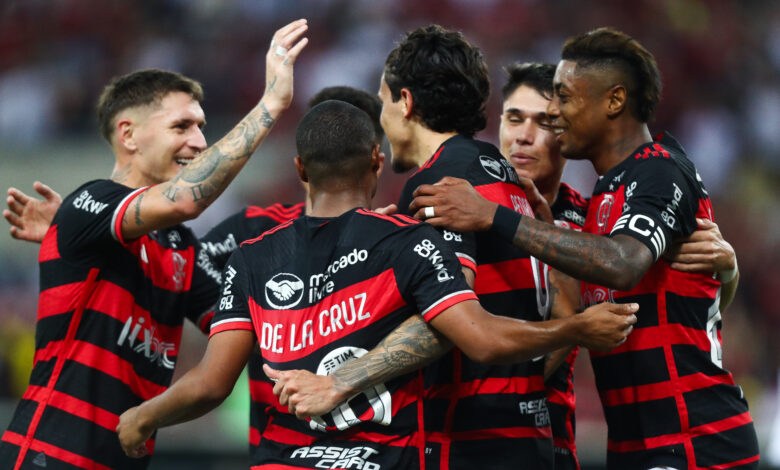
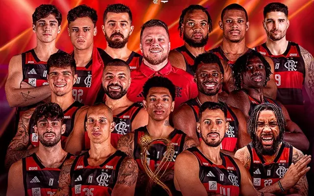
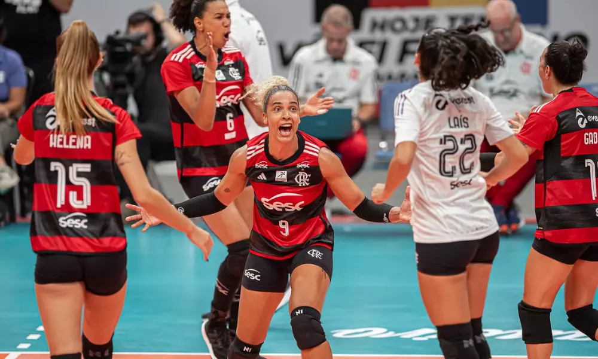
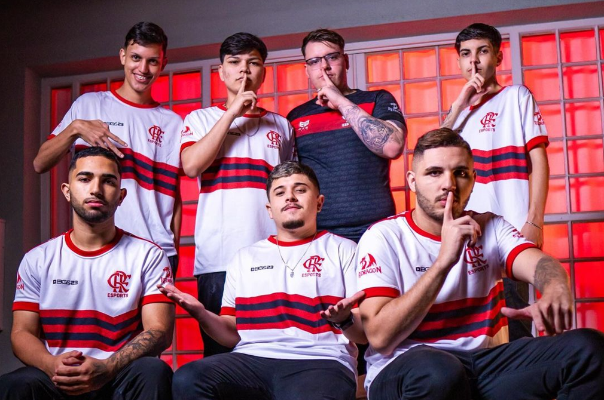
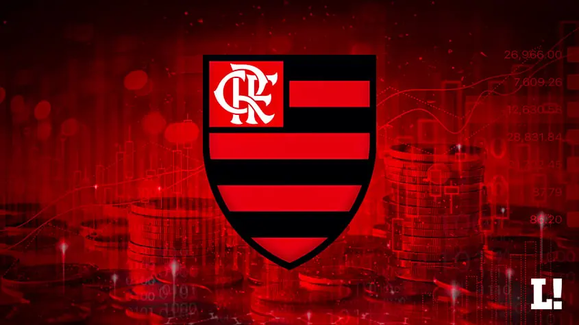

Onde Tudo Começou (1895)
O Clube de Regatas do Flamengo, carinhosamente conhecido como Flamengo, nasceu em 17 de novembro de 1895, na cidade do Rio de Janeiro. Sua fundação foi impulsionada pela paixão pelo remo, esporte de grande prestígio na época. A ideia de formar um clube surgiu entre um grupo de jovens remadores, que tinham o desejo de criar uma equipe própria para competir nas águas da Baía de Guanabara. Esse grupo se reunia na residência de Nestor de Barros, um dos grandes entusiastas do projeto.
O nome "Flamengo" foi escolhido em homenagem ao bairro onde os fundadores costumavam treinar, a Praia do Flamengo, local onde a paixão pelo esporte era cultivada diariamente. Inicialmente, o clube era exclusivamente voltado para o remo, o que refletia o espírito esportivo e aventureiro dos jovens que o idealizaram. Entre esses fundadores estavam José Agostinho Pereira da Cunha, Mário Spíndola, e Augusto Lopes, que se tornaram as primeiras figuras importantes na história do Flamengo.
Com o passar do tempo, o Flamengo começou a se destacar nas competições de remo, ganhando notoriedade no cenário esportivo carioca. No entanto, a semente plantada pelos fundadores foi além das águas da baía. A paixão pelo esporte e o desejo de crescer levaram o Flamengo a explorar novos horizontes, e assim, o clube que começou como um grupo de amigos apaixonados por remo, se transformou em uma potência do esporte brasileiro, com uma trajetória marcada por grandes conquistas e uma torcida apaixonada que se estende por todo o país.
Entrada no Futebol (1912)
A história do futebol no Flamengo começou a ser escrita em 1912, marcando uma das decisões mais importantes e transformadoras para o clube. Até então, o Flamengo era conhecido como um clube de regatas, mas tudo mudou quando um grupo de jogadores do Fluminense, descontentes com a diretoria de seu clube, decidiu buscar novos ares. Liderados por Alberto Borgerth, um jovem entusiasta do futebol, esses atletas encontraram no Flamengo o lugar perfeito para continuar jogando o esporte que tanto amavam.
O Flamengo aceitou o desafio e, em 24 de dezembro de 1911, o departamento de futebol foi oficialmente criado. A primeira partida oficial do time de futebol do Flamengo aconteceu em 3 de maio de 1912, contra o Mangueira, no campo da Rua Paysandu. O resultado foi impressionante: uma vitória esmagadora por 15 a 2, que deixou claro que o futebol rubro-negro estava destinado a grandes feitos.
A inclusão do futebol no clube foi um sucesso imediato, e rapidamente o Flamengo começou a atrair torcedores entusiasmados. Com o futebol, o clube ganhou um novo significado e expandiu sua influência. Em poucos anos, o Flamengo deixou de ser apenas um clube de regatas para se tornar uma instituição poliesportiva, com o futebol assumindo o papel central.
A entrada no futebol não foi apenas uma mudança de modalidade esportiva, mas o início de uma nova era. O Flamengo se consolidou como um dos clubes mais importantes do Brasil, acumulando vitórias, títulos e uma torcida cada vez maior e mais apaixonada. A decisão de abraçar o futebol em 1912 foi, sem dúvida, um marco que redefiniu a história do Flamengo e o posicionou como um dos grandes nomes do esporte mundial.
A Era de Ouro do Flamengo (1980–1983)
A Era de Ouro do Flamengo, vivida entre 1980 e 1983, é um dos períodos mais gloriosos da história do clube, marcado por uma sequência de títulos inesquecíveis e pela presença de um dos maiores ídolos do futebol brasileiro: Zico. Esse período simboliza o auge do futebol rubro-negro, quando o Flamengo se consolidou como uma verdadeira potência no cenário nacional e internacional.
Tudo começou em 1980, quando o Flamengo conquistou o Campeonato Brasileiro pela primeira vez, derrotando o Atlético Mineiro na final. Sob o comando do técnico Cláudio Coutinho, o time, que já contava com talentos como Zico, Júnior, Leandro, e Adílio, mostrou um futebol vistoso e envolvente, ganhando a admiração de torcedores e críticos.
O ponto alto dessa era veio em 1981, quando o Flamengo alcançou a glória máxima ao conquistar a Taça Libertadores da América, o principal torneio de clubes da América do Sul. Na final, disputada contra o Cobreloa, do Chile, o Flamengo venceu por 2 a 0 no terceiro jogo, realizado em Montevidéu, com dois gols de Zico. Essa vitória histórica qualificou o clube para disputar o Mundial Interclubes.
Em 13 de dezembro de 1981, o Flamengo fez história ao se tornar campeão mundial, vencendo o Liverpool por 3 a 0 na final do Mundial Interclubes, em Tóquio. Com gols de Nunes (dois) e Adílio, o time deu um verdadeiro show, garantindo uma das maiores exibições de um clube brasileiro no cenário internacional.

O sucesso continuou em 1982, quando o Flamengo conquistou seu segundo Campeonato Brasileiro, vencendo o Grêmio na final, e em 1983, quando venceu seu terceiro título nacional, batendo o Santos na decisão. Esses anos de ouro foram caracterizados por um futebol ofensivo, técnico e envolvente, com Zico liderando uma geração que encantou o Brasil e o mundo.
A Era de Ouro do Flamengo é lembrada não apenas pelos títulos, mas também pela maneira como o time jogava. Com talento, técnica e paixão, o Flamengo daquela época deixou um legado que até hoje inspira jogadores e torcedores. Zico, conhecido como o "Galinho de Quintino", se tornou o maior ídolo da história do clube, personificando o espírito vencedor e a magia do futebol rubro-negro.
O Flamengo nos Dias de Hoje
O Flamengo, tradicionalmente conhecido como um dos clubes de futebol mais icônicos do Brasil e da América Latina, tem expandido sua presença e influência para além das quatro linhas do campo, abrangendo uma gama diversificada de esportes e atividades. Nos dias atuais, o Flamengo se destaca não apenas pelo sucesso e tradição no futebol, mas também pelo seu papel crescente e significativo em outras modalidades esportivas.
Futebol
No cenário do futebol, o Flamengo continua a brilhar com uma trajetória impressionante. O clube mantém-se como um dos favoritos em competições nacionais e internacionais, com um elenco forte e uma base de torcedores apaixonada. A recente conquista de títulos, como o Campeonato Brasileiro e a Taça Libertadores, reafirma o Flamengo como uma força dominante no futebol sul-americano.
Basquete
No basquete, o Flamengo tem mostrado uma performance notável. O time masculino tem conquistado títulos importantes, como o NBB (Novo Basquete Brasil), e está se firmando como uma potência na competição nacional. O sucesso do Flamengo no basquete é um reflexo do compromisso do clube com o desenvolvimento e profissionalização deste esporte, que vem ganhando cada vez mais visibilidade.
Voleibol
O Flamengo também se destaca no voleibol, com equipes masculina e feminina competindo em alto nível. A equipe feminina, em particular, tem sido um destaque constante, competindo fortemente em campeonatos nacionais e regionais, e conquistando títulos importantes ao longo dos anos. O compromisso do clube com o voleibol demonstra a diversidade e a abrangência de suas atividades esportivas.
Natação
A natação é outra área onde o Flamengo tem mostrado seu talento e dedicação. Com uma equipe de atletas talentosos, o clube continua a se destacar em competições de natação, promovendo o esporte e incentivando jovens talentos. O Flamengo tem investido em infraestrutura e treinamento para garantir que seus nadadores tenham as melhores condições para competir e alcançar altos resultados.
E-Sports
Em tempos mais recentes, o Flamengo também tem se aventurado no mundo dos e-sports, uma área em crescente expansão no cenário esportivo global. Com equipes competindo em jogos populares e estabelecendo parcerias com plataformas de streaming e patrocinadores, o Flamengo está se posicionando como um jogador relevante também no universo digital.
Outras Atividades
Além dessas modalidades, o Flamengo também promove e apoia diversas outras atividades esportivas, demonstrando seu compromisso com a promoção da saúde, bem-estar e a prática esportiva em geral. O clube é um verdadeiro símbolo de diversidade e excelência esportiva.
Assim, o Flamengo não se limita a ser apenas um time de futebol de renome, mas sim um verdadeiro conglomerado esportivo que representa uma ampla gama de modalidades, todas com um histórico de sucesso e uma visão voltada para o futuro. A contínua expansão e diversificação do Flamengo são um testemunho de seu compromisso em ser uma instituição esportiva de relevância em múltiplos cenários.